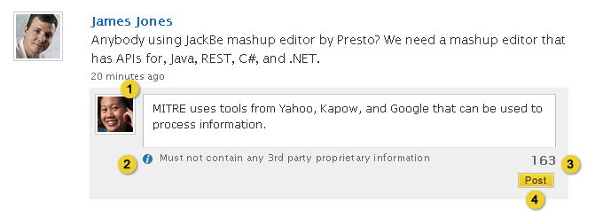
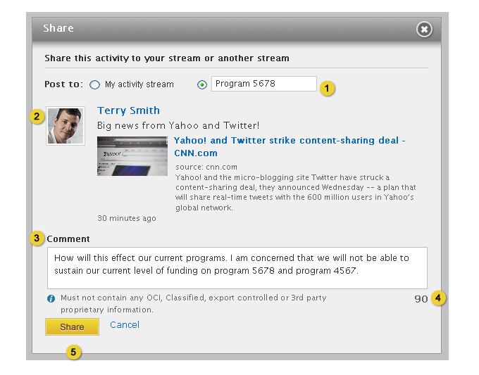

Home > Product Specification > Features > Interact with a stream
Interact with a stream
View Eureka Metrics
Follow and Subscribe to Streams
Overview
Knowledge workers can share activity between employee and group streams, like an activity,
flag activity as inappropriate, or add comments to activities.
Conditions of Satisfaction
Post to a Stream
- The knowledge worker must be able to post a message up to 250 characters to any public
stream with visual feedback when the limit has been reached.
- The knowledge worker must be able to attach a link to any message he is posting.
- The knowledge worker must be able to select from a set of available images associated to
a URL.
- The knowledge worker must be able to edit the title of the URL, which is pulled from the
site itself if the link is unsecured and accessible.
- The knowledge worker must see the description of the link parsed from any unsecured and
accessible URL.
- The knowledge worker must receive a warning if the URL is in the correct format but
inaccessible.
- The knowledge worker must receive an error if the URL is not in the correct format
(*://)
- The knowledge worker must be able to immediately view the posted message if it is
associated to the stream he is currenlty viewing.
Actions on an Activity
- The knowledge worker must be able to comment on an activity when he is not restricted by
stream moderation.
- The comment must be restricted to 1000 characters with visual feedback when the limit has been reached.
- The knowledge worker must be able to share an activity to a colleague, public group, or
private group he is a member of.
- The knowledge worker must not be able to share activity posted to a private group.
- The knowledge worker must be able to attach a comment to an activity he is sharing.
- The knowledge worker must be able to flag an activity as inappropriate.
- The knowledge worker must be able to like and unlike an activity.
- The group coordinator must be able to select exactly one exisiting activity at a time to “stick” to the top of the stream
Delete from a Stream
- The knowledge worker must be able to delete any activity or comment he has posted.
- The knowledge worker must be able to delete any activity or comment posted to his stream
or a stream he coordinates.
- The Eureka administrator must be able to delete any activity or comment.
User Experience
Post an Activity

- Default state of the post box. Show only the user’s avatar and the name of the stream that will be posted to inside.

- The user types his message in the expanded box, up to 250 characters
- If the user tpyes a hashtag (a word beginning with a #) a menu pops up with popular hashtags for the stream he’s posting to
- A countdown starts at 250 and counts down as the characters are typed, indicating the remaining characters. When at 0 and below, the number turns red
- Attach a link opens up the attach link section defined below.
- The configurable message that appears below the post box.
- The post button is inactive if there the number of characters in the box are 0 or >250, other wise it is active and posts the message. The stream must refresh to show the message after it has been posted. If the post button is hit when a user has pasted a link into the attach link section but not hit the “add” button, the system should hit the add button for the user.

- Clicking attach link displays the add link form where the knowledge worker can enter the URL of the link they want to attach.
- The form can be closed by clicking the “x” button.
- Clicking the Add button submits the link. URL should be in the following example format: http://www.example.com. Validate that at least one ‘.’ exists in the url.

- Link thumbnail
- Link title, editable input box is populated with the auto-detected the title.
- Link source
- Link description
- Paging controls allowing the knowledge worker select a link thumbnail from a set of available images associated the attached url.
- Check box allowing the knowledge worker to suppress the display of the link thumbnail.
- Clicking ‘x’ removes the link.
Actions on an Activity

- A knowledge worker can comment on an activity by hovering over an activity and clicking
on the comment link.

- Avatar of the knowledge worker posting the comment.
- Content warning message (configured in system settings).
- Remaining character count. When the character count is less than 0, the text color changes to red and appears as a negative number.
- The post button is only active when the remaining character count is 0 or greater.

- Minimized state of post box, clicking in the box expands the box to a editable text area.
Share an Activity

- A knowledge worker can share an activity by hovering over an activity and clicking on the
share link. Share option is not available for activities posted in a private group.

- A knowledge worker can share an activity to their own stream or to another individual or
group stream. If posting is turned off, the individual or group should not be displayed in the autocomplete.
- Activity being shared.
- Input box to enter a comment.
- Remaining characters
- The share button is only active when the remaining character count is less than 1000 or 0 or greater.

- Name of the knowledge worker sharing the activity and the stream it is being shared to.
- Name of the knowledge worker that authored the activity.
- Comment from the knowledge worker sharing the activity.
Like an Activity


- An activity displays it’s like count (if over 0) to the knowledge worker. When the
knowledge worker clicks on the thumbs up icon or the like button, the user has ‘liked’ the
activity and the number increments.
- A knowledge worker can hover over the like count showing a hovering card displaying the
last 10 people to have liked the activity with an option to view more.
- A knowledge worker is able to unlike the activity by clicking on ‘unlike’.

- A knowledge worker will be presented with this modal listing all employees who liked an
activity if he/she clicks on ‘view all’
Flag an Activity

- A knowledge worker can flag an activity by hovering over an activity and clicking on the
flag link. When the knowledge worker clicks the flag link, a pop-up window will be displayed
asking them: “Flagged activities will be sent to the Eureka Administrator for review. Are you sure you want to flag this activity as inappropriate?” If the knowledge worker clicks yes the activity remains on the page. Feedback is displayed at the top of the page with a close option: “Activity has been flagged”. Refer to the Action Feedback UI design pattern for additional details. The actions described in the View and manage an organization profile Flagged activities section and Manage and Receive Notifications UX designs are performed.
Stick an Activity

- A group coordinator can “stick” an activity to the top of the stream by hovering over an activity and clicking on the stick link.

- A group coordinator can “unstick” an activity by hovering over the activity and clicking the unstick link. The only activities available on a “stuck” activity is to share and unstick. Associated comments are not shown.
Delete from a Stream

- An actvity can be deleted by hovering over an activity and clicking on the delete link. Knowledge workers may delete actvities and comments they have personally authored, or any activities and comments posted to the knowledge worker’s stream. Stream coordinators may delete comments and activities on the stream they coordinate. Eureka administrators can deleted any activity or comment.
Test Plan
Post to a Stream
- Verify a knowledge worker can post activity to a stream
- Verify that when a hashtag is entered into the post box, an autocomplete box displays with the list of popular hashtags within the stream that match the user input. Verify in both the profile and activity pages.
- Verify the knowledge worker is immediately able to view the posted activity in the
stream
- Verify activity can be posted with or without a url in the following types of streams:
- to a colleagues stream
- to your stream
- to to a public group stream
- to to a private group stream where knowledge worker is a group member
- Verify a knowledge worker can post activity containing a url to a profile stream
- Verify the ability to select from a set of available images associated with a url
- Verify the system validates the url
- Verify the system auto-detects the title for an unsecure url
- Verify the system is able to parse an unsecure url for the description meta tag
- Verify the title for a url can be changed
- Verify the ability to immediately view the url if it is associated to the stream currently being viewed
- Verify the ability to select from a set of available images associated to a url
- Verify a knowledge worker can delete activity
- Verify the ability to delete an activity posted by yourself
- Verify the ability to delete a url posted by yourself
- Verify a knowledge worker can restrict character limits for posting activity
- Verify commenting is limited to 250 characters
- Verify visual feedback is provided to notify character count
- Verify a knowledge worker can immediately view the post
- Verify the ability to immediately view a post
- Verify the ability to immediately view a url
Actions on an Activity
- Verify a knowledge worker can comment on activity (assuming commenting is enabled)
- Verify a comment can be posted against any activity
- Verify a knowledge worker can share activities
- Verify an activity can be shared in the following cases:
- colleague to colleague
- colleague to public group
- colleague to private group where knowledge worker is a member
- public group to public group
- public group to private group where knowledge worker is a member
- public group to colleague
- Verify a knowledge worker can like and un-like an activity
- Verify activities can be liked
- Verify activities can be un-liked
- Verify that liked activity appears in the liked default stream on the activity page
- Verify a knowledge worker can attempt to share activity within a private group
- Verify share link is not provided for an activity with comments
- Verify share link is not provided for an activity without comments
- Verify a knowledge worker can attach comment when sharing an activity
- Verify comments can be added when sharing activities
- Verify character count is limited to 1000 characters
- Verify visual notification indicating character count
- Verify a knowledge worker can flag an activity as inappropriate
- Verify the ability to flag an activity as inappropriate
- Verify a knowledge worker can restrict character limits for commenting on activity
- Verify commenting is limited to 250 characters
- Verify visual notification indicating character count
- Verify a group coordinator can stick an activity to the top of a stream
* Verify the stick option is available to group coordinators only on hover of an activity
* Verify the activity moves to the top of the stream and higlighted when the group coordinator clicks the stick link
* Verify comments do not appear for “stuck” activities
* Verify the Share and Unstick links are the only options available on hover of the “stuck” activity
* Verify the activtiy returns to its default location once it is “unstuck”
Delete from a Stream
- Verify a knowledge worker can delete a comment
- Verify a comment can be deleted only by the knowledge worker it was posted by
- Verify a delete confirmation is presented
- Verify the delete confirmation must be acknowledged before the delete is processed
- Verify a knowledge worker can delete an activity or comment posted by another knowledge
worker to his personal stream
- Verify a delete confirmation is presented
- Verify the delete confirmation must be acknowledged before the delete is processed
- Verify a knowledge worker can delete an activity or comment posted by another knowledge
worker a stream he coordinates
- Verify a delete confirmation is presented
- Verify the delete confirmation must be acknowledged before the delete is processed
- Verify a knowledge worker can delete an activity or comment (Eureka administrator)
- Verify a delete confirmation is presented
- Verify the delete confirmation must be acknowledged before the delete is processed
| PAGE CONTENTS
Version 1.1
Documentation is also available for all of the following versions:
0.9 | 1.0 | 1.2 | 2.0
|